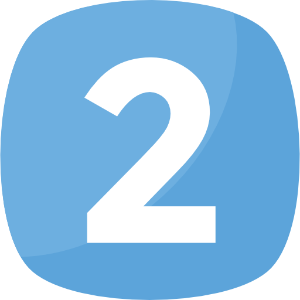

METAS
-
Tener mi propia empresa
Mi meta principal es la de tener mi propia empresa de desarrollo de software, ser mi propio jefe y, obviamente, tener éxito.
También ser un buen lider para dirigir bien a mis empleados.
-

Tener una familia
Supongo que esta es una de las metas de la mayoría de las personas, tener una familia con hijos y todo eso. Actualmente no pienso en casarme y tener hijos, pero en un futuro si llega la indicada (jajaja bien cursi) pues me la rifaría.
También una de mis metas es de ayudar a mis papás, apoyarlos en lo que ocupen y darles una cantidad de dinero para que dejen de trabajar.
-

Ir a un mundial de la FIFA y a festivales de música electrónica
Como unos de mis gustos es el futbol y la música electrónica, una de mis metas más deseadas es la de asistir a un mundial de futbol, asistir a los partidos y vivir el ambiente que se hace en la ciudad, y en los estadios.
Además, ir a los festivales de música más famosos como el Tomorrowland, Ultra Music, y otros de otros géneros, como el Coachella, Lollapalooza, etc.
-

Viajar por el mundo
Viajar es una de las cosas que más me fascinan, por tal motivo una meta es viajar por todo el mundo, conocer lugares, países, culturas diferentes.
Esta meta no se cumplirá tan fácil, ya que esta implica el ahorro, sacrificarme en algunas ocasiones de comprar algo innecesario o derrochar el dinero, más bien ahorrar cierto porcentaje cada salario.
-

Ser Ingeniero Alberto
Primeramente, una meta que sí o sí voy a consrguir es el de terminar mi carrera, tener el título de ingeniero en software, pero no sólo terminar la carrera, sino salir con buen promedio y sobre todo, con la mayor cantidad posible de conocimientos acerca del área, ser un excelente profesionista desde el principio.
Además, otra meta es no quedarme con la pura licenciatura, hacer maestría y no dejar de aprender, tomar muchos cursos, talleres y todo lo que me enriquezca tanto en la vida profesional como en la personal.